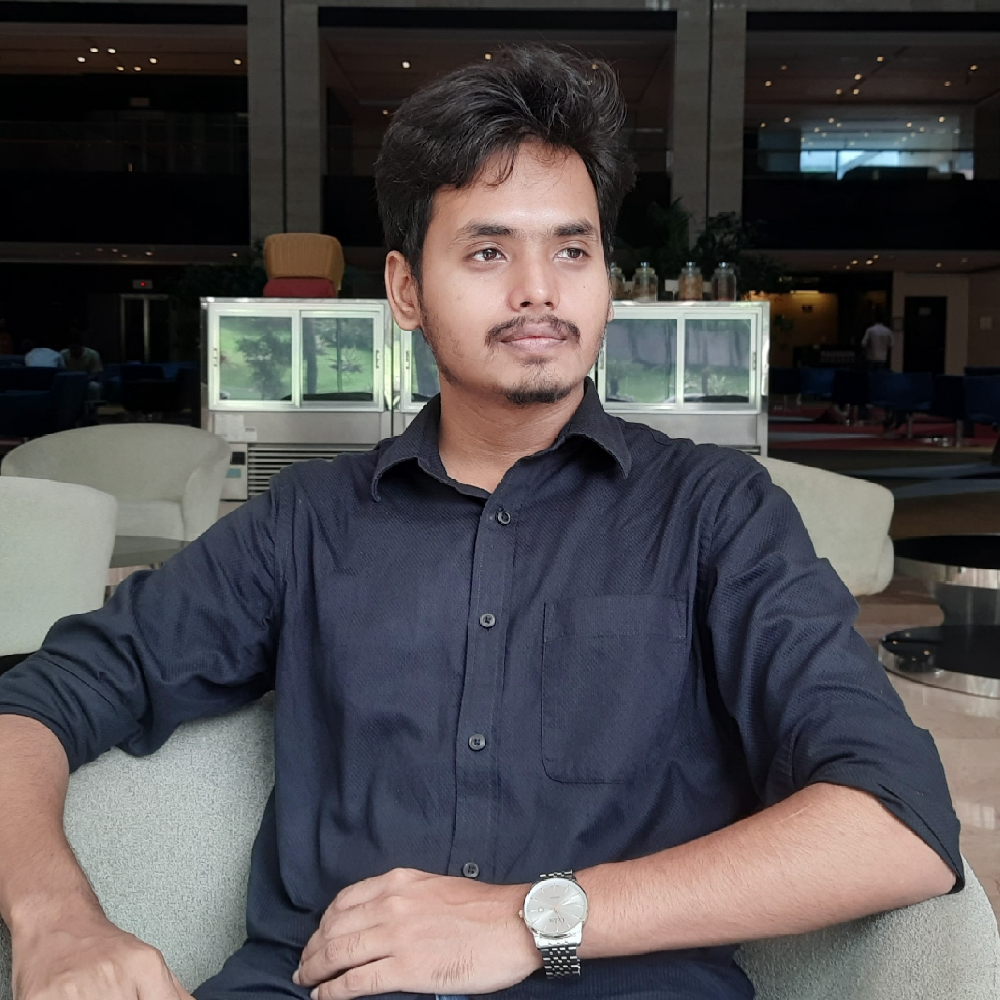

Ahasan Kabir
Ph.D. student in Computer Science
University of Central Florida
advised by Prof. Qian Lou

I am seeking a research internship for Summer 2027 in ML systems and efficient inference. Reach out over email!
Biography
I am a Ph.D. student in Computer Science at the University of Central Florida, advised by Prof. Qian Lou. My research focuses on efficient AI inference — building systems that maximize GPU and hardware utilization for large-scale LLM serving through hardware-aware routing, scheduling, and orchestration.
My first-author paper HW-Router, on hardware-aware routing for scalable multi-LLM serving, appeared at DAC 2026 (Design Automation Conference), and I was selected as a DAC Young Fellow in 2026. Most recently, I built InfraMind, an infrastructure-aware multi-agent orchestration framework.
News
- Aug 2026I am looking for research internships for Summer 2027 in ML systems and efficient inference.
- Jun 2026InfraMind, our infrastructure-aware multi-agent orchestration framework, is now on arXiv.
- 2026Selected as a DAC Young Fellow 2026.
- 2026HW-Router is accepted at DAC 2026, the 63rd ACM/IEEE Design Automation Conference.
- Aug 2025Started my Ph.D. in Computer Science at the University of Central Florida.
Selected Publications
-
Efficiency HW-Router: Hardware-Aware Routing for Scalable Multi-LLM Serving
DAC 2026 · 63rd ACM/IEEE Design Automation Conference
Routing requests across a multi-LLM fleet with awareness of the underlying hardware, raising accelerator utilization at scale.
-
Agents InfraMind: Infrastructure-Aware Multi-Agent Orchestration
arXiv 2026 · preprint arXiv
Makes multi-agent orchestration infrastructure-aware — up to 7× lower latency and 99.9% SLO compliance under load on shared GPU clusters.
-
NLP BEmoLexBERT: A Hybrid Model for Multilabel Textual Emotion Classification in Bangla by Combining Transformers with Lexicon Features
BLP @ EMNLP 2023 · Workshop on Bangla Language Processing PDF ACL
-
Multimodal BEmoFusionNet: A Deep Learning Approach for Multimodal Emotion Classification in Bangla Social Media Posts
Honors & Awards
- DAC Young Fellow, ACM/IEEE Design Automation Conference — 2026
- ICPC Asia West Continent Finalist — represented CUET, 2022
- ICPC Asia Dhaka Regional — Honorable Mention, 2020 & 2021
- Meta Hacker Cup — 2021
Experience
- 2025 – now Graduate Research Assistant, University of Central Florida — advisor: Prof. Qian Lou
- 2024 – 2025 Research Assistant (part-time), CUET NLP Lab
- 2023 – 2025 Software Engineer, Kinetik Healthcare Solutions — built an on-demand iOS platform for non-emergency patient transportation
Education
- 2025 – now Ph.D. in Computer Science, University of Central Florida
- B.Sc. in Computer Science & Engineering, Chittagong University of Engineering & Technology (CUET)